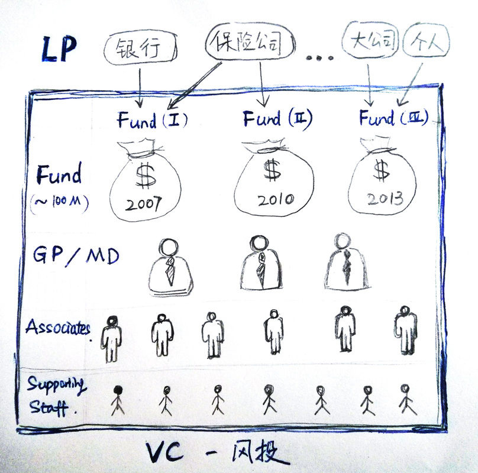

之所以 VC 显得神秘，大家了解不多，大概是因为很多创业者还没怎么深入接触 VC 就被秒杀了吧。知己知彼方能百战不殆。作为创业者，发扬死磕精神把 VC 研究清楚是不容推辞的任务。
至少看完这篇文章，希望你能不用再为 VC，GP，LP，MD，Fund 是什么而苦恼了。 VC 是 Venture Capital 的缩写，中文就是 “风险投资”。那么 VC 究竟是什么呢？ 在很多人眼里 VC 仅仅是一个抽象的存在，它代表着源源不断的钱，拿到了 VC 的投资就成功了一半 ...
其实 VC 也就是一个公司，没什么神秘的，只不过是一个靠 “投资创业公司” 挣钱的公司，也是由管理层和员工组成的。

LP - Limited Partner
VC 的钱也不是自己的，也是四处奔走找来的。主要的资金来源就是这些 LP 。LP 大多是一些银行，保险公司，大公司和一些很有钱的个人。他们把自己的钱投资给风险投资公司，风投再拿着这些钱去投创业公司挣钱。
Fund - 基金
VC 从 LP 那儿拉来的钱并不是直接全部放进口袋，而是按照年份组织成一个个独立的 Fund，每一个 Fund 都是独立管理运营的。每个基金的规模大概是 $100 Million （大概就是6亿元人民币），生命周期大概是10年（可以延长）。弄清楚投资自己的是哪一个 Fund 对于创业者至关重要！！！这个以后再细说。
GP - General Partner & MD - Managing Director
GP 和 MD 相当于这个 VC 公司的创始人，通常由3到5个人组成，一般都是久经沙场的老将。他们负责四处游说，从 LP 那儿拉投资，他们负责决定这些钱如何分配，投资给哪些创业公司。GP 和MD其实没有太大区别，主要是因为法律上的一些考虑而衍生出的两种叫法。
Associates / Supporting Staff
这些人就相当于VC公司的员工，可能是新出道的 MBA 或者某些有经验的创业者。他们负责四处打听新创企业，并做前期调研。
创业者是否了解 VC ，是否知道如何同 VC 打交道很大程度上决定了能否成功拿到投资。比如创业者应该知道最终的决定权掌握在 GP / MD 手上，很多情况下不应该耗费太多时间精力和 Associates 讨价还价。